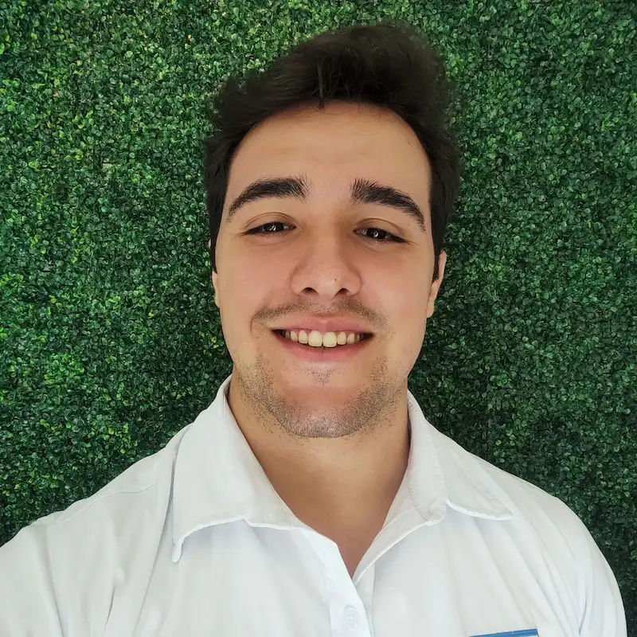

Olá, meu nome é Igor Mota e sou de Curitiba-PR, Brasil. Eu gosto de praticar esportes, principalmente rugby e futebol. Gosto de passear, ir a praia, ver series e jogar. E tenho gostado de estudar programação.